DBSCAN Gene Clustering
What is DBSCAN?
DBSCAN (Density-Based Spatial Clustering of Application with Noise) is a clustering algorithm that groups genes into clusters based on how closely related the genes are.
Why Use the DBSCAN Tool?
In general, clustering is used to find patterns or outliers within data sets. In this implementation of DBSCAN, genes in the same cluster would be considered similar, while genes in different clusters would be less similar. An explanation of DBSCAN can be found here. Within Geneweaver, this tool can be used to infer relationships between genes. For example, if clusters with similar genes continue to appear in tests across multiple data sets, one could say that these genes are closely related.
DBSCAN Parameters
DBSCAN takes in 2 parameters, epsilon and minPoints.
The Epsilon Parameter
Epsilon determines how close the genes need to be in order to be considered in the same cluster. For example, an epsilon of 1 means that genes need to share at least 1 gene set. Another way of describing epsilon would be the "radius of the neighborhood". A larger epsilon will have a farther reach when finding clusters.
The minPoints Parameter
The minPoints parameter determines the minimum number of points required to form a cluster. A cluster can have more than the minPoints number of genes, but cannot be less than minPoints. If a cluster has less than minPoints number of genes, it is considered noise.
The DBSCAN Algorithm
Before the DBSCAN algorithm executes, it must determine how closely related each gene is to the other genes. A bipartite graph is used to show how the genes connect to each gene set. First, all closest paths between genes are found. Following that, the DBSCAN algorithm is run. You can find an example of DBSCAN here.
Run Times of DBSCAN
On average, the worst-case time complexity of DBSCAN is O(n^2^). However, due to the sheer variability of data sets and epsilon and minPoints combinations, it is difficult to accurately predict the run time of this implementation. There are some factors that will typically increase the run time. These include:
- Number of Genes: If more genes are tested, the run time is longer
- Epsilon Value: A larger epsilon will typically give a longer run time
- The size of gene sets: Gene sets with more genes in them will take longer to explore
- The density of genes: If the data set is denser (more connections), the run time is longer
Note: Even if no clusters are found, the algorithm may still take time to execute.
Below is a graph that shows the run times of the algorithm. The red line shows the run time if all genes are in the same gene set. The blue line shows the genes divided into 10 gene sets, with no overlap. The green line is similar to the blue line, but here the gene sets share one gene in common with one other gene set. This results in one giant cluster with all of the genes.
Note: Since the blue line and green line overlap, you may not be able to see the blue line.
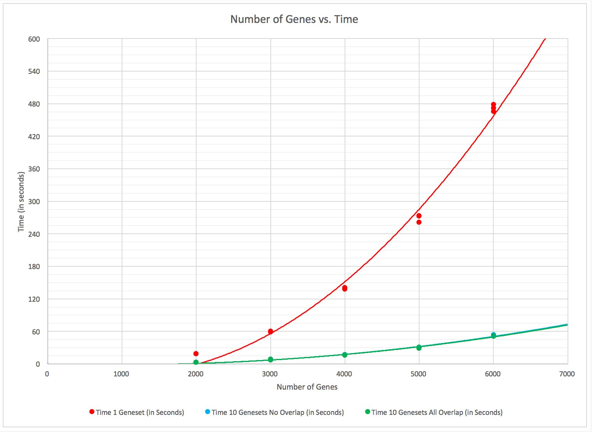
Below is a table that estimates the run time of the red, blue, and green cases based on number of genes. Note that run times will change based on density of the gene sets and epsilon.
| Number of Genes | 1 Gene Set | 10 Gene Sets, No Overlap | 10 Gene Sets, Overlap |
|---|---|---|---|
| 100 | 3 | 3 | 3 |
| 200 | 3 | 3 | 3 |
| 500 | 5 | 3 | 3 |
| 1,000 | 10 | 3 | 3 |
| 1,500 | 12 | 3 | 3 |
| 2,000 | 15 | 3 | 3 |
| 2,500 | 28 | 5 | 5 |
| 3,000 | 63 | 8 | 8 |
| 3,500 | 110 | 12 | 12 |
| 4,000 | 160 | 17 | 18 |
| 4,500 | 230 | 24 | 25 |
| 5,000 | 306 | 32 | 33 |
| 6,000 | 487 | 50 | 51 |
| 7,000 | 708 | 72 | 75 |
| 8,000 | 969 | 98 | 100 |
| 9,000 | 1270 | 129 | 131 |
| 10,000 | 1612 | 163 | 165 |
Approximate DBSCAN Run Times with Epsilon = 1 and Min Points = 1 (in seconds)
Visualization
Once DBSCAN is completed, results can be visualized in two ways. However, there is a possibility that visualization may not occur. If a data set is too large, the results will not be visualized and a message will be displayed.
Note: Due to the rendering of the Cluster / Gene Table, run times may appear longer than estimated in here.
Circles
The default visualization on the tool is circle packing. This represents the clusters and the genes within them. The outermost circle is the entire data set. The darker blue circles within represent the different clusters. The circles within the clusters represent the genes that belong to the cluster. The color of each gene denotes the species.
To see more information about the cluster, you can click on the cluster. This will zoom in on the cluster and display gene IDs. Clicking on a gene ID will redirect to a search for that gene within the GeneWeaver database.
Below is an example of the circle packing visualization with zoom functionality.
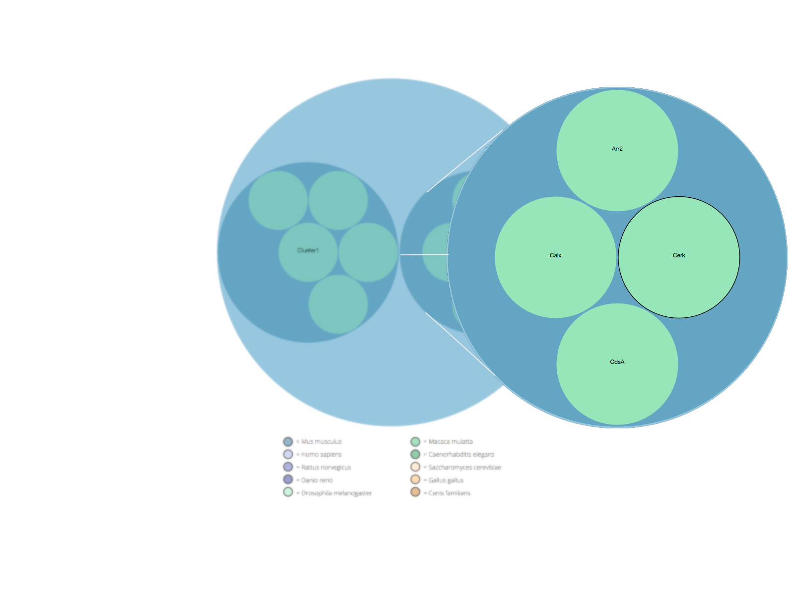
Wires
The other visualization is a wire representation. This shows the connections between all genes in the same gene set. The color of each gene shows which cluster the gene is in. If a gene is grey, it is considered noise. Mousing over a circle will highlight it and show the gene ID. By clicking and holding a gene, you can drag the gene around the screen.
Note: This visualization will only be drawn with small data sets due to the complexity of drawing all lines between genes.
Below is an example of the wires visualization.
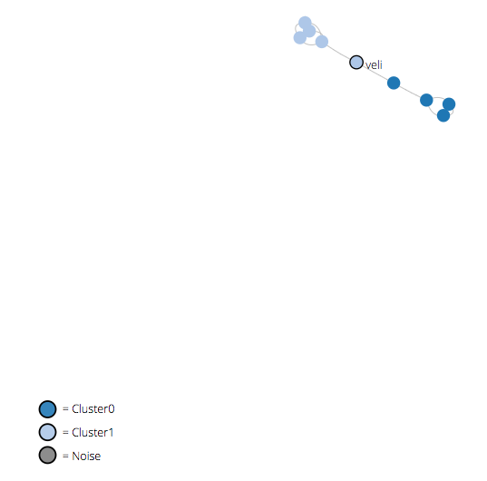
Cluster / Gene Table
Below the visualizations is a table. This table is split up into clusters, which contains all the genes within that specific cluster. Information about each gene can be seen here as well. This table is similar to the one on the GeneSet Details page.
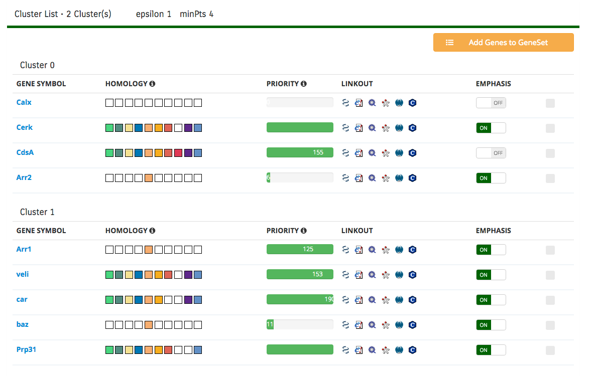
If the data set becomes sufficiently large, a minimized table will be shown on screen. An example of the minimized table is below.
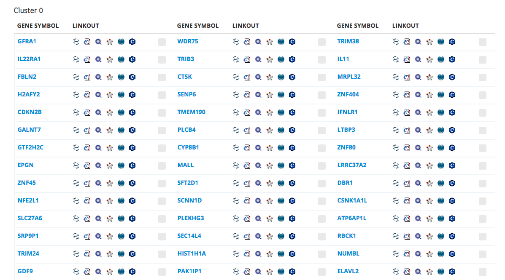
DBSCAN Example
Below is an example of the DBSCAN algorithm. For this example, epsilon is set to 1 and min-points is set to 4. Figure 1 shows the gene-to-gene set bipartite graph.
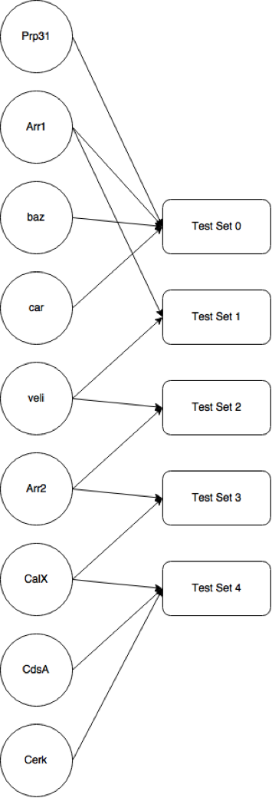
Figure 1: The gene-to-gene set bipartite graph
Finding Shortest Paths Between Genes
Starting at "Test Set 0" Prp31, Arr1, baz, and car are all in the same gene set. This means that when building the gene-to-gene graph, all of those genes will be connected to each other. "Test Set 1" shows that Arr1 and veli are connected. "Test Set 2"has veli and Arr2 connected. "Test Set 3" has Arr2 connected to CalX. Finally, "Test Set 4" has CalX, CdsA, and Cerk connected. Now that the connections between genes are determined, a map can be drawn showing these connections (Figure 2).
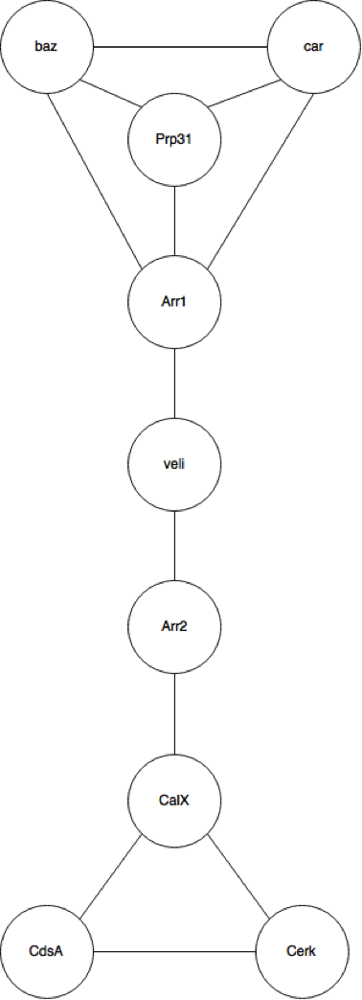
Figure 2: The gene-to-gene graph denoting shortest paths
Using this graph, the shortest path from a gene to any other gene can be determined. For example, the distance between Arr1 and baz is 1. The distance between Prp31 and CalX is 4. This is important when applying epsilon to the algorithm.
Running the DBSCAN Algorithm
This is the pseudocode for the algorithm.
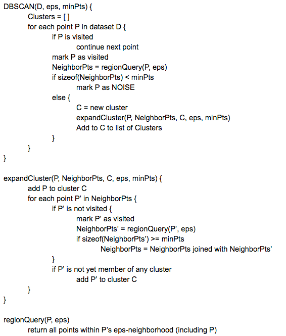
Starting in the DBSCAN function, the cluster is first initialized to 0. Next, each point is visited only once. For this example, baz will be the first gene visited. baz will first be marked as visited, then the neighbors of baz will be found by regionQuery. The regionQuery function will return all points within radius epsilon, including the point itself. Calling regionQuery on baz with epsilon will return all genes that are one away from baz. In this example baz, car, Prp31, and Arr1 are returned and listed as baz's neighbors.
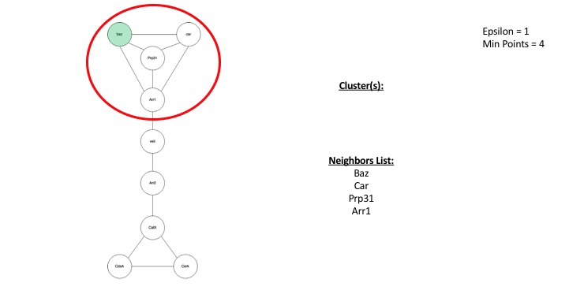
The list of [baz, car, Prp31, Arr1] are returned. Now the amount of items in the list is checked with the minPoints parameter. If it is greater than or equal to minPoints, a cluster is formed. Otherwise, the point is labelled as noise. In this example, baz has 4 neighbors, which is equal to the number of points. The "C = next cluster" statement means that C is a valid cluster. Next, the expandCluster function is called.
The expandCluster will continue to expand the cluster until the edge of the cluster is reached. The edge of a cluster is reached when a point has a list of neighbors that is less than the number of minPoints. When entering the expandCluster function, the point P will be added to the cluster. The cluster is currently [baz]. Next, the algorithm runs through all of the neighbors to see if the cluster can be expanded. The list of neighbor points is now [baz, car, Prp31, Arr1]. First baz is checked, but because it has already been visited, it is not going to be checked again. Next, car is checked. Car will then return a list of all its neighbors, which are [car, baz, Prp31, Arr1]. Then that list is checked against the number of minPoints. Since it is greater than or equal to minPoints, that list is added to the original list of neighbors. The original neighbors list of [baz, car, Prp31, Arr1] and the new neighbors list of [car, baz, Prp31, Arr1] are added together. However, the algorithm does not add duplicate genes to the list. Therefore, nothing is added to the list and the neighbors list is [baz, car, Prp31, Arr1]. Then, the gene is added to the current cluster if it is not already part of a cluster. car is not a part of any other cluster so it is added to the current cluster. Now the cluster contains [baz, car].
Next, Prp31 is checked. Its neighbors are [baz, car, Prp31, Arr1]. This list is equal to minPoints, but once again, the list of Prp31's neighbors are already in the list of baz's neighbors. Nothing is added to new neighbors, and since Prp31 is not a part of any other cluster, it is added to the current cluster, which is now [baz, car, Prp31].
Now, Arr1 is checked. Its neighbors are [Arr1, baz, car, Prp31, veli]. Notice that a new gene appeared in Arr1's neighbors (veli). This gene is now added to the list of baz's neighbors. Arr1 is added to the current cluster, so the cluster now holds [baz, car, Prp31, Arr1]. Now there is still one gene left to check in baz's neighbors, which is veli.
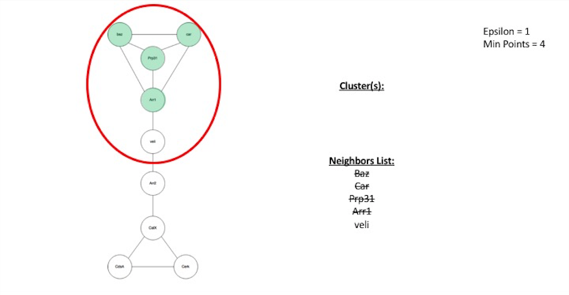
veli is checked and it's neighbors are [veli, Arr1, Arr2]. The list is less than the number of minPoints, which means the cluster cannot be expanded past veli.
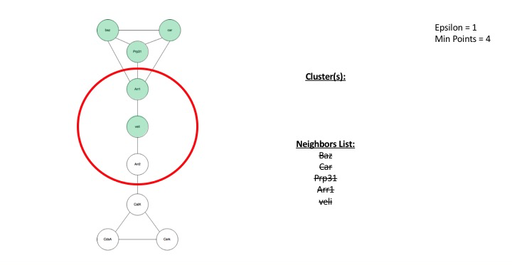
However, veli is still part of the current cluster. The current cluster is now [baz, car, Prp31, Arr1, veli]. Since the list of baz's neighbors have all been checked, the cluster is finished.
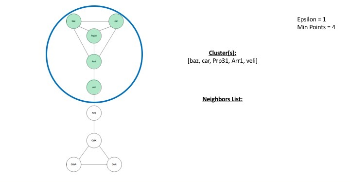
Now that baz has been checked, it is time to check other genes. Next, car is checked. However, it was already visited when handling baz's neighbors, so nothing needs to be checked. The same applies for Prp31, Arr1, and veli. The next gene to check is Arr2. Arr2's neighbors are [veli, Arr2, CalX]. This is less than minPoints, so it is marked as noise.
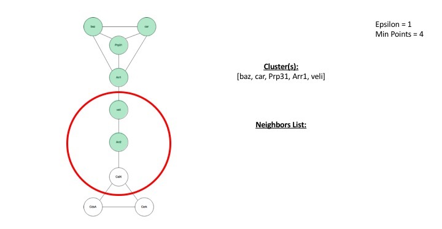
However, just because a gene is marked as noise, does not guarantee it is noise when the algorithm is finished. Later in the algorithm, it can be added to a cluster.
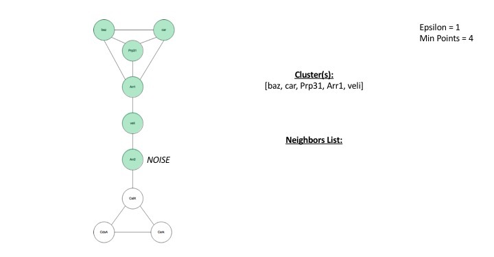
Next, CalX is checked. It's neighbors are [CalX, Arr2, CdsA, Cerk]. This list is equal to minPoints, so the cluster needs to be expanded.
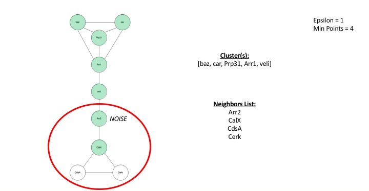
CalX is checked, but it is already visited, and it is not a part of any cluster, so it is added to the 2^nd^ cluster. The 2^nd^ cluster currently holds [CalX]. Next, Arr2 is checked, but it was already visited and marked as noise. However, it is not in any cluster, so it is added to the 2^nd^ cluster. The 2^nd^ cluster now contains [CalX, Arr2]. Next, CdsA is checked. Its neighbors are [CdsA, Cerk, CalX]. This list is not greater than minPoints so nothing is added. CdsA is not added to the 2^nd^ cluster because it is not part of the first cluster. The 2^nd^ cluster is now [CalX, Arr2, CdsA]. Finally, Cerk is checked. Its neighbors are [CdsA, CalX]. The list is smaller than minPoints, so they are not added to Calx's neighbors. Cerk is not a part of any cluster, so it is added to the 2^nd^ cluster. The 2^nd^ cluster is now complete. It contains [CalX, Arr2, CdsA, Cerk].
Now that CalX is checked, CdsA is checked. It was already visited in the expandCluster function so nothing needs to be done. The same applies for Cerk. The algorithm is now complete.
Two clusters were produced: [baz, car, Prp31, Arr1, Veli] and [Arr2, CalX, CdsA, Cerk]
Figure 3 shows the gene-to-gene map visualized in clusters.
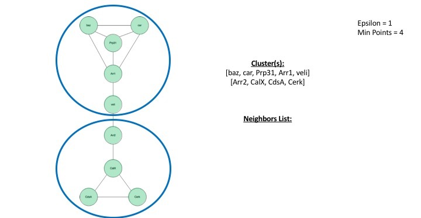
Figure 3: The result of the DBSCAN clustering